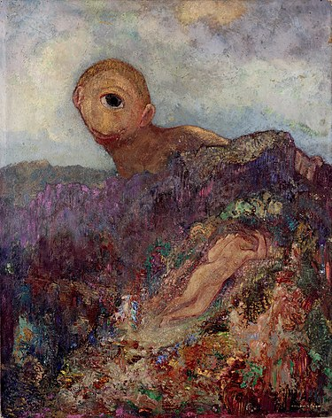
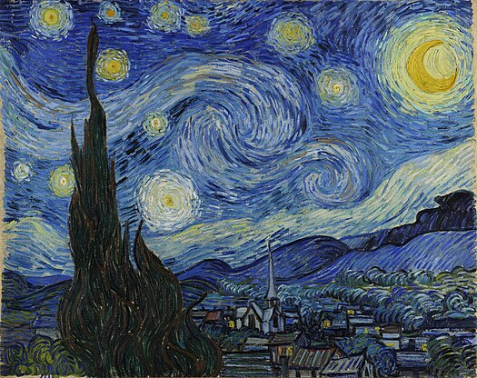
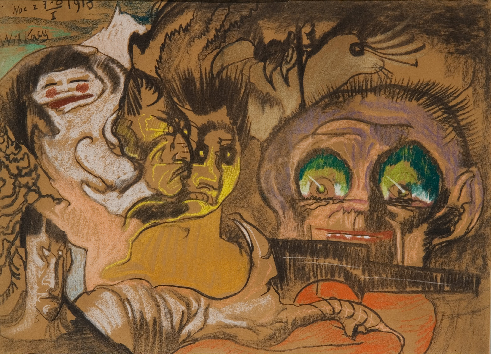

.jpg)
خوش آمدید
...
آخرین نقاشی ها

سیکلوپ
دنیای رویا
آثار ردون دنیایی رویایی را به تصویر میکشد که پریها، هیولاها، ارواح و دیگر شخصیتهای فانتزی در آن زندگی میکنند. این امر او را به طور معمول نماینده نمادگرایی می کند، یک جنبش هنری در اواخر قرن نوزدهم با گرایش شدید به ناخودآگاه، چیزهای خارق العاده و غیرقابل توضیح.

شب پر ستاره
سمان شب ون گوگ میدانی از انرژی غوغایی است. در زیر ستارگان در حال انفجار، روستا مکانی آرام است. اتصال زمین و آسمان، سرو شعله مانند است، درختی که به طور سنتی با قبرستان و عزا همراه است. اما مرگ برای ون گوگ شوم نبود. او گفت: "نگاه کردن به ستاره ها همیشه مرا به رویا می اندازد"، "چرا، از خودم می پرسم، نباید نقاط درخشان آسمان به اندازه نقاط سیاه روی نقشه فرانسه قابل دسترسی باشند؟ درست همانطور که قطار را به مقصد می کنیم." به تاراسکون یا روئن برسیم، ما برای رسیدن به یک ستاره، مرگ را می پذیریم."

استینسلاو
سمان شب ون گوگ میدانی از انرژی غوغایی است. در زیر ستارگان در حال انفجار، روستا مکانی آرام است. اتصال زمین و آسمان، سرو شعله مانند است، درختی که به طور سنتی با قبرستان و عزا همراه است. اما مرگ برای ون گوگ شوم نبود. او گفت: "نگاه کردن به ستاره ها همیشه مرا به رویا می اندازد"، "چرا، از خودم می پرسم، نباید نقاط درخشان آسمان به اندازه نقاط سیاه روی نقشه فرانسه قابل دسترسی باشند؟ درست همانطور که قطار را به مقصد می کنیم." به تاراسکون یا روئن برسیم، ما برای رسیدن به یک ستاره، مرگ را می پذیریم."
نفاشی های معروف
سیکلوپ
دنیای رویا
آثار ردون دنیایی رویایی را به تصویر میکشد که پریها، هیولاها، ارواح و دیگر شخصیتهای فانتزی در آن زندگی میکنند. این امر او را به طور معمول نماینده نمادگرایی می کند، یک جنبش هنری در اواخر قرن نوزدهم با گرایش شدید به ناخودآگاه، چیزهای خارق العاده و غیرقابل توضیح.
شب پر ستاره
آسمان شب ون گوگ میدانی از انرژی غوغایی است. در زیر ستارگان در حال انفجار، روستا مکانی آرام است. اتصال زمین و آسمان، سرو شعله مانند است، درختی که به طور سنتی با قبرستان و عزا همراه است. اما مرگ برای ون گوگ شوم نبود. او گفت: "نگاه کردن به ستاره ها همیشه مرا به رویا می اندازد"، "چرا، از خودم می پرسم، نباید نقاط درخشان آسمان به اندازه نقاط سیاه روی نقشه فرانسه قابل دسترسی باشند؟ درست همانطور که قطار را به مقصد می کنیم." به تاراسکون یا روئن برسیم، ما برای رسیدن به یک ستاره، مرگ را می پذیریم
استینسلاو
آسمان شب ون گوگ میدانی از انرژی غوغایی است. در زیر ستارگان در حال انفجار، روستا مکانی آرام است. اتصال زمین و آسمان، سرو شعله مانند است، درختی که به طور سنتی با قبرستان و عزا همراه است. اما مرگ برای ون گوگ شوم نبود. او گفت: "نگاه کردن به ستاره ها همیشه مرا به رویا می اندازد"، "چرا، از خودم می پرسم، نباید نقاط درخشان آسمان به اندازه نقاط سیاه روی نقشه فرانسه قابل دسترسی باشند؟ درست همانطور که قطار را به مقصد می کنیم." به تاراسکون یا روئن برسیم، ما برای رسیدن به یک ستاره، مرگ را می پذیریم
بارگذاری بیشتر